Bản cập nhật ngày 20/11/2026 giúp nhân sự, cấp trên và nhân viên nhìn cùng một bức tranh: tổ chức cần năng lực gì cho chiến lược, ai đang có kỹ năng gì, ai còn thiếu và nên làm gì tiếp. Mọi đề xuất của hệ thống, kể cả của AI, đều có người duyệt và ghi lại lý do.
Thay đổi cần lưu ý
- Menu mới theo phạm vi và triển khai theo hai phase: menu nhóm theo Của tôi, Nhóm của tôi, Tổ chức và Vận hành; có tìm nhanh (Ctrl K) và ghim. Toho Gas bắt đầu ở Phase 1: trang của Phase 2 hiện mờ với nhãn "Sắp mở", nhân viên và cấp trên chưa mở được, nhân sự và quản trị mở được để chuẩn bị dữ liệu.
- Giao diện song ngữ Nhật – Việt: tổ chức Toho Gas mặc định tiếng Nhật. Người dùng đổi ngôn ngữ bằng nút 日本語 / VI ở góc trên. Tên job, đơn vị, kỹ năng nhập bằng tiếng Nhật được hiển thị theo ngôn ngữ đang chọn. Khi chọn tiếng Việt, họ tên hiển thị dạng chữ Latin theo フリガナ; file xuất ra vẫn giữ tên gốc.
- Môi trường thử nghiệm dùng dữ liệu mẫu: toàn bộ tên người, dự án và số liệu là dữ liệu giả lập. Dải màu cam ở đầu mỗi trang nhắc điều này.
- AI chỉ chạy khi tổ chức bật: AI gợi ý kỹ năng từ mô tả job và chấm sơ bộ bằng chứng chỉ hoạt động khi đã cấu hình dịch vụ AI và nhật ký gọi AI. Khi AI tắt, gợi ý chuyển sang so khớp từ điển, bằng chứng vào thẳng hàng hậu kiểm của người duyệt.
- Thông báo hiện trong ứng dụng: chuông ở góc trên báo IDP được duyệt, task Đạt hoặc bị trả lại, bằng chứng chờ hậu kiểm. Thư điện tử được ghi vào hộp thư đi và sẽ gửi khi tổ chức kết nối kênh thư.
- Một số tính năng tắt cho Toho Gas: nhãn rủi ro nghỉ việc, phân tích mạng lưới cộng tác, chỉ số giá trị cá nhân và đăng ký FA (社内FA) đang tắt theo quyết định của giai đoạn thí điểm. Bật lại bằng cấu hình, không cần cập nhật phiên bản.
Tính năng mới
1Việc cần làm và chuỗi sáu bước
Giá trị mang lại
Giúp mỗi người biết ngay hôm nay cần quyết định gì, xếp theo mức rủi ro, thay vì phải mở từng màn hình để tìm.
- Với nhân sự: thấy đơn vị an toàn sắp dưới mức, thiếu hụt chờ duyệt, vị trí chưa có người kế thừa ngay trên trang đầu.
- Với cấp trên: chỉ thấy việc của đơn vị mình: đơn ứng tuyển cần phản hồi, IDP cần duyệt, bằng chứng cần hậu kiểm.
- Với doanh nghiệp: quy trình đi theo cùng một trình tự Bối cảnh → Năng lực → Con người → Thiếu hụt → Hành động → Theo dõi, nên các bộ phận không làm lệch bước của nhau.
Mô tả tính năng
Trang Việc cần làm gom các quyết định đang chờ từ mọi màn hình, mỗi dòng có một nút đi thẳng tới chỗ xử lý. Từ Phase 2, thanh sáu bước hiện ở trang này và sáu trang của chuỗi (Bối cảnh, Năng lực, Con người, Thiếu hụt, Hành động, Theo dõi), cho biết bước nào đã đủ, bước nào còn việc chờ; các trang khác không hiện thanh này. Ở Phase 1, trang chỉ đưa việc dẫn tới trang đã mở.
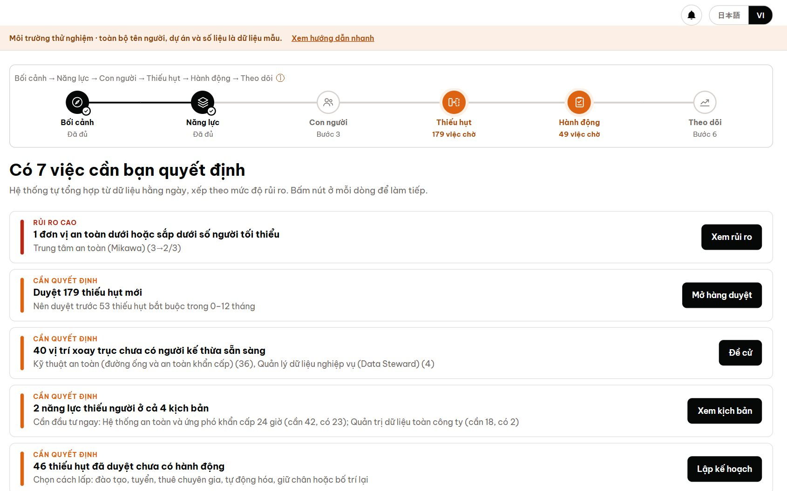
2Bối cảnh kinh doanh và chuyển đổi chiến lược
Giá trị mang lại
Giúp ban giám đốc và nhân sự nối mỗi kế hoạch nhân sự về một lý do kinh doanh cụ thể.
- Với ban giám đốc: thấy các phát hiện về thị trường, khách hàng, năng lực được xếp theo ba tiêu chí và ba thời điểm quá khứ, hiện tại, tương lai.
- Với nhân sự: mỗi thiếu hụt và hành động phát triển đều lần ngược được về chuyển đổi chiến lược mà nó phục vụ.
- Với doanh nghiệp: hệ thống chặn hành động không gắn mục tiêu, nên ngân sách đào tạo không bị dàn trải.
Mô tả tính năng
Vào Tổ chức → Chuỗi chiến lược → 1 · Bối cảnh và chuyển đổi chiến lược. Có ba cách xem: bản đồ, luồng căn cứ và bảng 3×3. Bấm một bong bóng để xem phát hiện đó làm căn cứ cho chuyển đổi nào. Trang Năng lực cần có nối tiếp: mỗi chuyển đổi cần năng lực tổ chức nào, năng lực đó cần vai trò và kỹ năng gì.
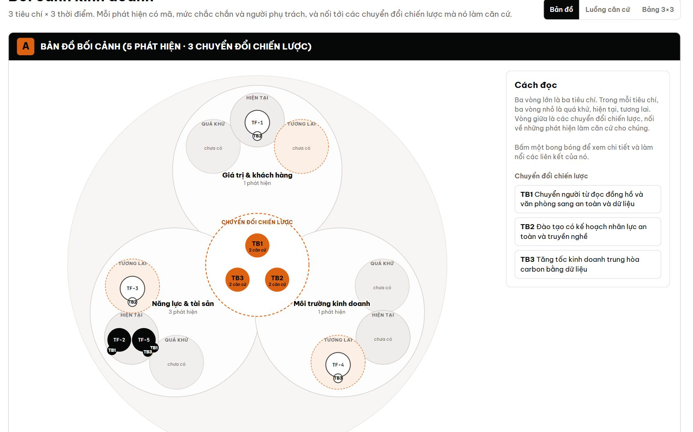
3Kiến trúc job và từ điển kỹ năng theo DSS ver.2.0
Giá trị mang lại
Giúp job, con người, khoá học và cơ hội nội bộ được mô tả bằng cùng một bộ kỹ năng mà doanh nghiệp Nhật đã quen.
- Với nhân sự: mỗi job có mô tả mục đích và nhiệm vụ chính; từ mô tả đó, AI đề xuất kỹ năng, mức cần và đoạn văn làm căn cứ; nhân sự chấp nhận, sửa hoặc bỏ từng dòng.
- Với Văn phòng DX: từ điển gồm 67 mục của デジタルスキル標準 ver.2.0 và 20 kỹ năng ngành khí đốt, điện, an toàn.
- Với doanh nghiệp: mọi lần sửa job và từ điển đều được ghi lại: ai sửa, sửa gì, khi nào.
Mô tả tính năng
Vào Kiến trúc job. Mỗi job có tên, mô tả job (mục đích và nhiệm vụ chính, tối đa 2.000 ký tự) và danh sách kỹ năng với mức cần (1–5), trọng số và loại Bắt buộc / Nên có / Có thì tốt. Nhân sự công ty con chỉ sửa job của công ty mình; nhân sự tập đoàn sửa toàn bộ.
- Mô tả job: nhập ở ô Mô tả job khi sửa job, hoặc nhập hàng loạt bằng cột description trong file job. Mô tả có thông tin cá nhân (email, số điện thoại…) bị từ chối khi lưu.
- Đề xuất kỹ năng: ô Đề xuất kỹ năng từ mô tả job tự điền sẵn mô tả đã lưu; có thể dán thêm mô tả chi tiết hơn trước khi bấm đề xuất.
- Tên và mô tả hai ngôn ngữ: khi sửa job, tên và mô tả mỗi thứ có hai ô: bản gốc (tiếng Nhật với Toho) và bản dịch (tiếng Việt). Mỗi ô chỉ ghi một ngôn ngữ; danh sách job và các trang khác hiện bản theo ngôn ngữ đang chọn.
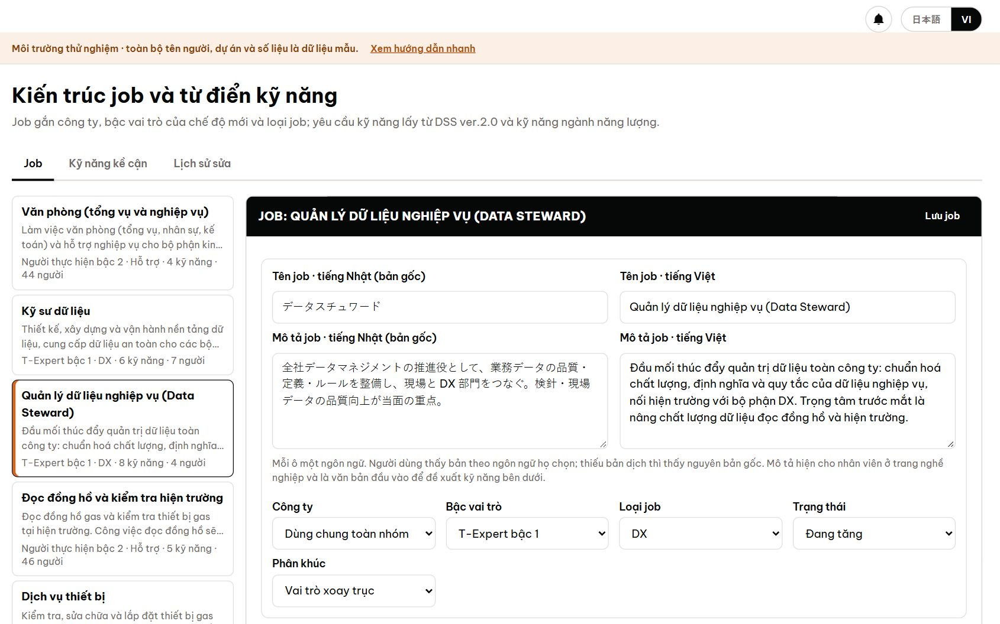
4Hồ sơ kỹ năng có bằng chứng
Giá trị mang lại
Giúp tổ chức biết kỹ năng thật của từng người, không chỉ số người đã đi học.
- Với nhân viên: xem toàn bộ kỹ năng của mình, bằng chứng đứng sau từng kỹ năng và gửi yêu cầu đính chính khi thấy sai.
- Với cấp trên: ghi nhận kỹ năng thể hiện qua công việc, chứng chỉ, dự án.
- Với nhân sự: mỗi kỹ năng có độ tin cậy tổng hợp từ nhiều nguồn và giảm dần nếu lâu không được cập nhật; chứng chỉ sắp hết hạn được nhắc trước 90 ngày.
Mô tả tính năng
Vào Lộ trình của tôi (nhân viên) hoặc Con người và kỹ năng (nhân sự, cấp trên). Kỹ năng chỉ được tính là "có" khi độ tin cậy từ 0,5 trở lên. Tự khai có trọng số thấp; kết quả đánh giá, chứng chỉ và xác nhận của cấp trên có trọng số cao hơn.
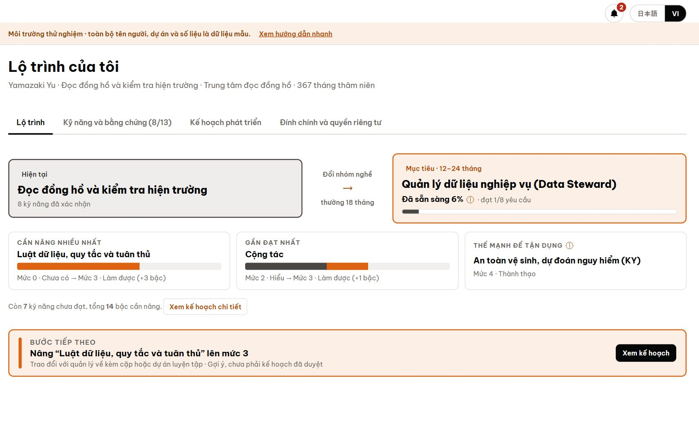
5Khám phá mạng lưới
Giá trị mang lại
Giúp nhân sự thấy một job, một người hay một kỹ năng nằm ở đâu trong toàn tổ chức chỉ trên một sơ đồ.
- Với nhân sự: chọn một job để thấy ai đang giữ, cần kỹ năng gì, job nào chuyển sang được và mất khoảng bao lâu.
- Với cấp trên: bấm từng chấm để đi tiếp sang người hoặc kỹ năng liên quan; đường đã đi hiện ở đầu sơ đồ.
Mô tả tính năng
Vào Tổ chức → Tri thức → Khám phá mạng lưới, gõ tên người, kỹ năng, job hoặc năng lực vào ô tìm kiếm. Nút Xem dạng bảng hiện cùng dữ liệu ở dạng danh sách.
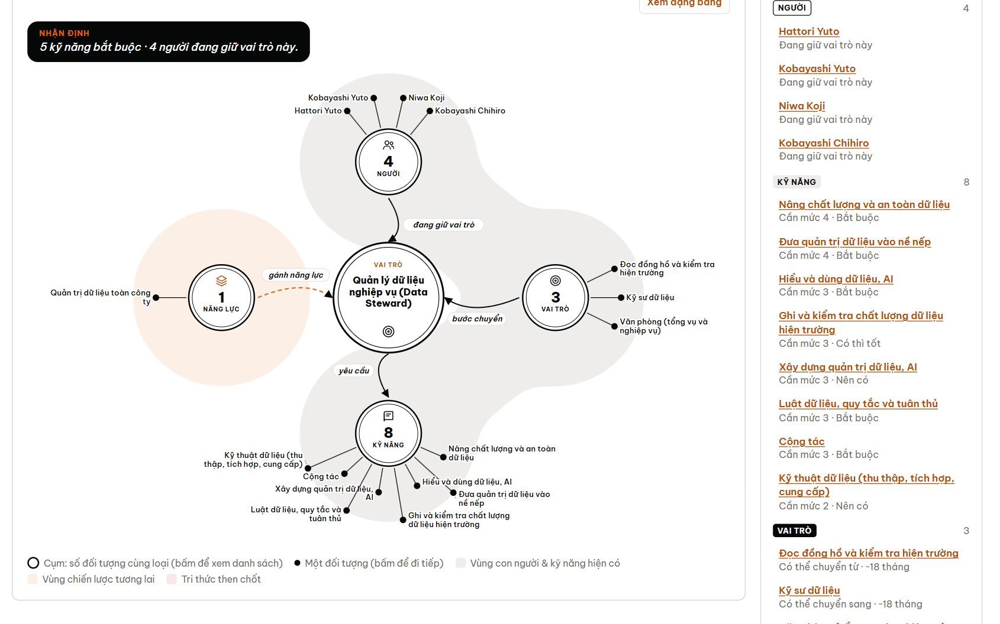
6Danh mục nhân sự động (人材ポートフォリオ)
Giá trị mang lại
Giúp ban giám đốc thấy cung – cầu nhân lực theo job, công ty và giai đoạn bằng con số, đúng yêu cầu công bố vốn con người.
- Với ban giám đốc: job nào dôi người, job nào thiếu, theo từng kịch bản kinh doanh và từng giai đoạn 0–12, 12–24, 24–36 tháng.
- Với nhân sự: thấy nguồn chuyển phù hợp từ job đang thu hẹp sang job còn thiếu, kèm số người đạt yêu cầu và số người đạt sau đào tạo.
- Với doanh nghiệp: DX人材 được đếm bằng kỹ năng thực; 23 chỉ số 人的資本開示 xuất được ra file.
Mô tả tính năng
Vào Tổ chức → Nhân lực → Danh mục nhân sự. Có bốn tab: Cung – cầu, Nhân lực DX (DX人材), Công bố vốn con người (人的資本開示) và Nhu cầu. Ban giám đốc và Văn phòng DX chỉ xem số tổng hợp, không xem dữ liệu từng người.
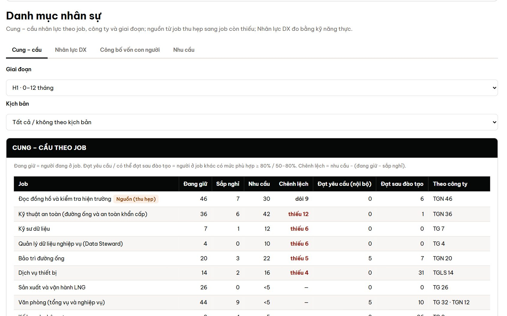
7Thiếu hụt và kế hoạch hành động
Giá trị mang lại
Giúp nhân sự xử lý thiếu hụt theo đúng thứ tự ưu tiên và chọn cách lấp phù hợp.
- Với nhân sự: ma trận mức độ × thời gian cần cho biết chỗ phải làm trước; duyệt từng thiếu hụt hoặc hàng loạt.
- Với cấp trên: chỉ thấy thiếu hụt đã được duyệt của đơn vị mình.
- Với doanh nghiệp: mỗi thiếu hụt có lý do kinh doanh; cách lấp gồm đào tạo, chuyển nội bộ, biệt phái, chuyên gia, tự động hoá, tuyển ngoài.
Mô tả tính năng
Vào Tổ chức → Chuỗi chiến lược → 4 · Thiếu hụt, bấm một ô của ma trận để lọc. Bấm Lý do trên từng dòng để xem căn cứ. Hành động lập ở Kế hoạch hành động và cũng đi qua hàng duyệt.
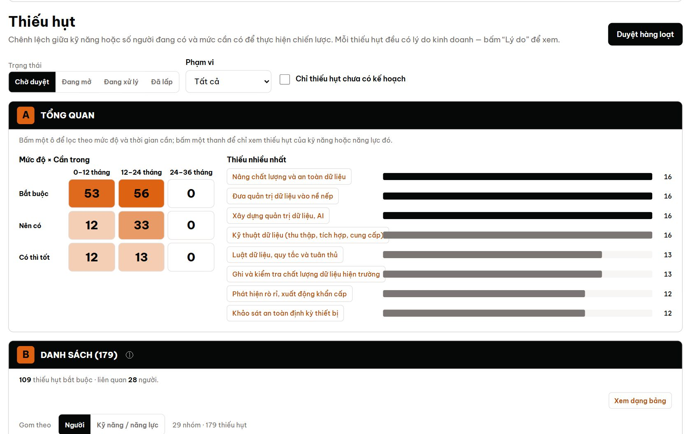
8Nghề nghiệp, nguyện vọng và キャリア面談
Giá trị mang lại
Giúp nhân viên biết trong tập đoàn có job nào hợp với mình, mình còn cách bao xa và nên học gì.
- Với nhân viên: 5–10 job phù hợp với mức sẵn sàng (%) và lý do; chọn tối đa 3 nguyện vọng; lộ trình học ưu tiên kỹ năng kề cận với kỹ năng đã giỏi.
- Với cấp trên: nhận bản chuẩn bị buổi trao đổi nghề nghiệp gồm phần nhân viên chọn chia sẻ, rồi ghi lại kết quả và cam kết.
- Với doanh nghiệp: nhân viên tự chọn ai được xem nguyện vọng chuyển việc (chỉ nhân sự, hoặc cả cấp trên).
Mô tả tính năng
Vào Nghề nghiệp và nguyện vọng. Mỗi thẻ job phù hợp hiện mô tả ngắn của job, mức sẵn sàng, kỹ năng đã có và kỹ năng cần thêm. Mỗi kỹ năng thiếu có khoá học, dự án nội bộ hoặc chứng chỉ nên lấy.

9Tuyển dụng nội bộ (社内公募, dự án, 社内副業)
Giá trị mang lại
Giúp nhân viên dám ứng tuyển nội bộ và giúp phòng đi không bị mất người mà không có phương án.
- Với nhân viên: ứng tuyển ẩn danh; cấp trên hiện tại chỉ biết khi đơn được chọn vào vòng trong. Đơn bị loại không hiện với cấp trên, kèm lý do và kỹ năng nên bổ sung.
- Với phòng tuyển: thấy hồ sơ kỹ năng không tên và mức phù hợp của từng ứng viên trước khi quyết định.
- Với phòng đi: nhận gợi ý bù người; chỉ đồng ý hoặc đề nghị hoãn có thời hạn, không có quyền từ chối.
Mô tả tính năng
Vào Tuyển dụng nội bộ. Người đăng tạo cơ hội, nhân sự duyệt trước khi đăng. Đơn đi qua các bước: Đã nộp → Vào vòng trong → Được chọn → Nhân sự xác nhận → Cấp trên phòng đi phản hồi → Nhân sự quyết định. Khi được duyệt, người chuyển tự có kế hoạch 90 ngày ở Theo dõi sau chuyển.
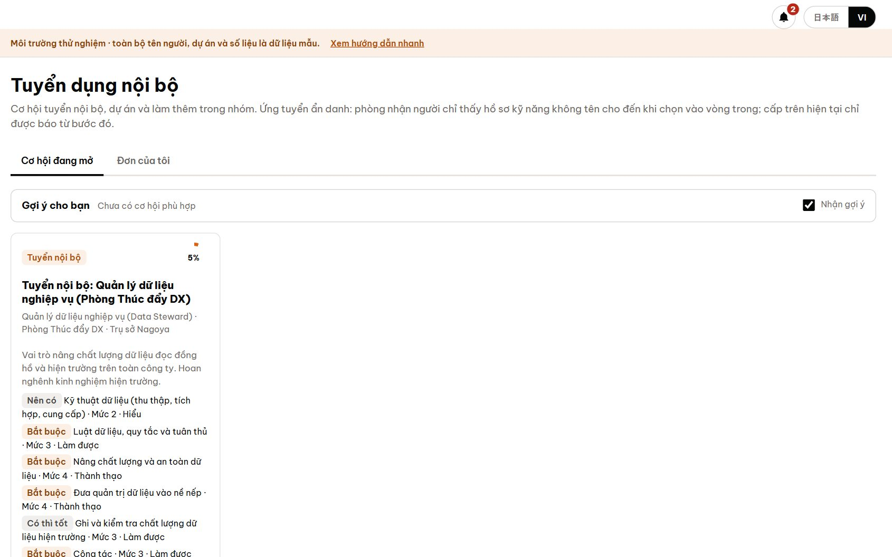
| Điểm thay đổi | Cách làm phổ biến trước đây | Trên Workforce Graph |
|---|---|---|
| Cấp trên hiện tại | Biết ngay khi nhân viên nộp đơn | Chỉ biết khi đơn vào vòng trong |
| Phòng đi | Có thể từ chối cho người đi | Đồng ý hoặc hoãn tối đa 90 ngày, một lần, có lý do |
| Tiêu chí chọn | Ít công khai | Mức phù hợp theo kỹ năng, hiện cho cả phòng tuyển và ứng viên |
| Thử trước khi chuyển | Hiếm có | Dự án nội bộ và 社内副業, tối đa 20% thời gian |
10Điều chuyển định kỳ (定期異動) và biệt phái (出向)
Giá trị mang lại
Giúp nhân sự lập phương án cho đợt điều chuyển tháng 4 và tháng 10 dựa trên dữ liệu kỹ năng, mà quyết định vẫn do người đưa ra.
- Với nhân sự: mỗi vị trí cần người có danh sách ứng viên xếp theo mức phù hợp; xuất phương án đã duyệt cho hệ thống nhân sự.
- Với doanh nghiệp: phương án làm đơn vị an toàn xuống dưới mức tối thiểu bị chặn ngay khi lập.
Mô tả tính năng
Vào Điều chuyển định kỳ, tạo đợt, chọn vị trí, chọn ứng viên rồi duyệt cả đợt. Biệt phái sang công ty khác trong tập đoàn được duyệt riêng và theo dõi ngày kết thúc.
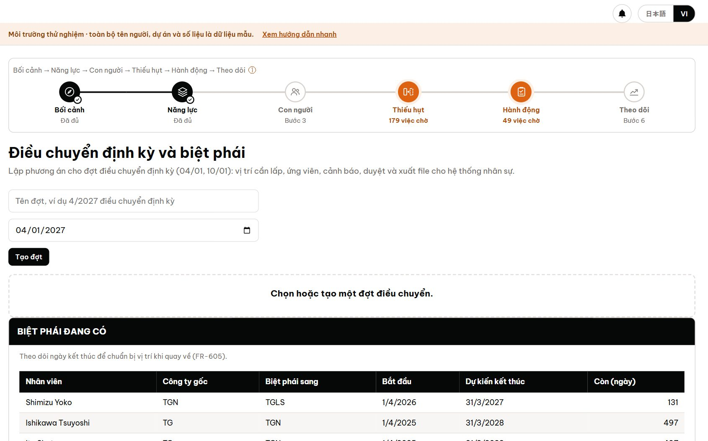
11An toàn và kế thừa (保安)
Giá trị mang lại
Giúp tổ chức không bao giờ rút người khỏi job an toàn khi chưa có người thay và chưa truyền nghề xong.
- Với nhân sự: thấy đơn vị nào dưới mức, sắp dưới mức hoặc vừa đủ, nhìn trước tới 180 ngày, kèm lý do giảm (nghỉ hưu, chứng chỉ hết hạn).
- Với cấp trên: lập kế hoạch truyền nghề cho người giữ kỹ năng then chốt.
- Với doanh nghiệp: 13 chứng chỉ theo luật và 10 quy tắc số người tối thiểu; chuẩn nội bộ (社内基準) tách khỏi mức theo luật (法定).
Mô tả tính năng
Vào An toàn và kế thừa. Khi một quyết định chuyển người làm đơn vị xuống dưới mức, hệ thống chặn; nhân sự chỉ vượt được khi ghi lý do và phương án bù.

12Theo dõi sau chuyển
Giá trị mang lại
Giúp người mới chuyển có hỗ trợ trong 90 ngày đầu và giúp tổ chức đo được chuyển người có hiệu quả không.
- Với cấp trên mới: checklist 90 ngày (chào đón, người hướng dẫn, mục tiêu, đào tạo, hướng dẫn an toàn) và các mốc 30/60/90 ngày.
- Với người chuyển: khảo sát ngắn ở ngày 30, ngày 90 và tháng thứ 12; câu trả lời chỉ người trả lời và nhân sự xem.
- Với nhân sự: báo cáo số cơ hội, số đơn, số người chuyển, tỷ lệ giữ chân, và người học xong đã vào đúng job đích chưa.
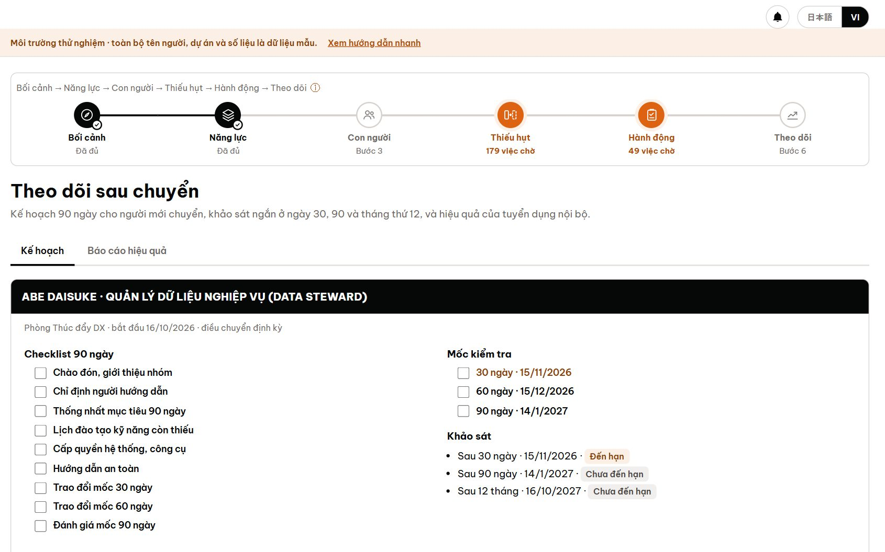
13Kế hoạch phát triển cá nhân (IDP) và hậu kiểm bằng chứng
Giá trị mang lại
Giúp mỗi người có kế hoạch học có thời lượng cho đúng job và ngạch mình hướng tới, và giúp tổ chức biết người học có thật sự lên kỹ năng hay không.
- Với nhân viên: tự đánh giá theo job và ngạch mục tiêu, nhận IDP gồm các task có giờ học, khoá gợi ý theo thứ tự nội bộ → miễn phí → có phí; nộp ảnh, PDF hoặc link làm bằng chứng.
- Với cấp trên: duyệt IDP trước khi chạy; hậu kiểm bằng chứng, kết luận Đạt hoặc Trả lại có lý do.
- Với doanh nghiệp: chỉ task Đạt mới tính tiến độ và được ghi vào hồ sơ kỹ năng; kỹ năng không học được qua khoá học (ví dụ số người đã kèm cặp) chỉ hiện để tham khảo.
Mô tả tính năng
Nhân viênVào Kế hoạch phát triển (IDP), chọn ngạch hiện tại, job và ngạch mục tiêu, chấm mức của từng kỹ năng theo thang của kỹ năng đó. Nút Gợi ý từ hồ sơ điền sẵn mức khi hồ sơ có đủ dữ liệu cho ít nhất một nửa số kỹ năng. Bấm Hoàn tất và lập IDP khi đã chấm đủ.
Cấp trên, nhân sựVào Duyệt IDP và hậu kiểm. Phần A là IDP chờ duyệt, phần B là bằng chứng chờ hậu kiểm kèm nhận xét sơ bộ của AI. Bằng chứng chờ quá 5 ngày làm việc được đánh dấu đỏ.
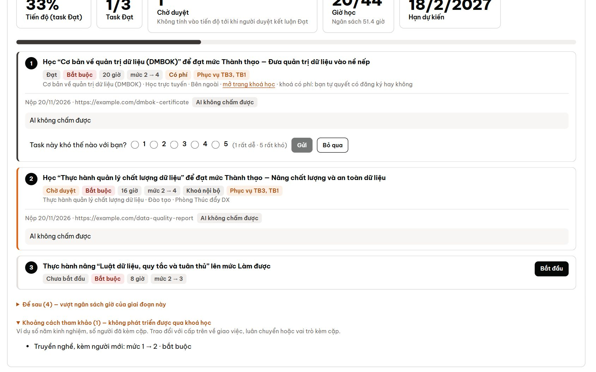
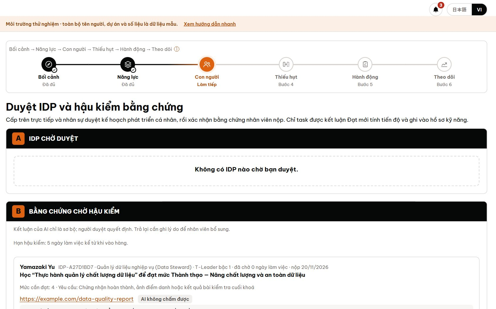
Lưu ý: mức tự đánh giá là mốc để lập kế hoạch học, không phải xếp hạng chính thức. Hệ thống không tự kết luận Đạt cho bất kỳ bằng chứng nào; khi hàng hậu kiểm đông, bằng chứng quá hạn được báo cho nhân sự.
14Khung năng lực theo ngạch
Giá trị mang lại
Giúp mức yêu cầu của mỗi job khớp với chế độ ngạch mới từ tháng 4/2026, và thay đổi khung mà không làm mất dữ liệu của nhân viên.
- Với nhân sự: mỗi ngạch của một job có bộ mức yêu cầu, trọng số và mục bắt buộc riêng; mỗi kỹ năng có thang mức riêng (ví dụ thang việc hiện trường 0–4).
- Với doanh nghiệp: mỗi lần đổi khung đi qua bản nháp và báo cáo ảnh hưởng (mục thêm, bỏ, đổi; số người bị ảnh hưởng), chỉ kích hoạt khi ghi người xác nhận phía tổ chức.
Mô tả tính năng
Vào Khung theo ngạch, chọn job, tải template, điền một dòng cho mỗi ngạch × kỹ năng rồi tải lên. File có lỗi bị từ chối cả file, kèm danh sách lỗi theo dòng. Bản cũ được lưu lại, không ghi đè; task của kỹ năng bị bỏ được gắn nhãn và vẫn tính tiến độ.
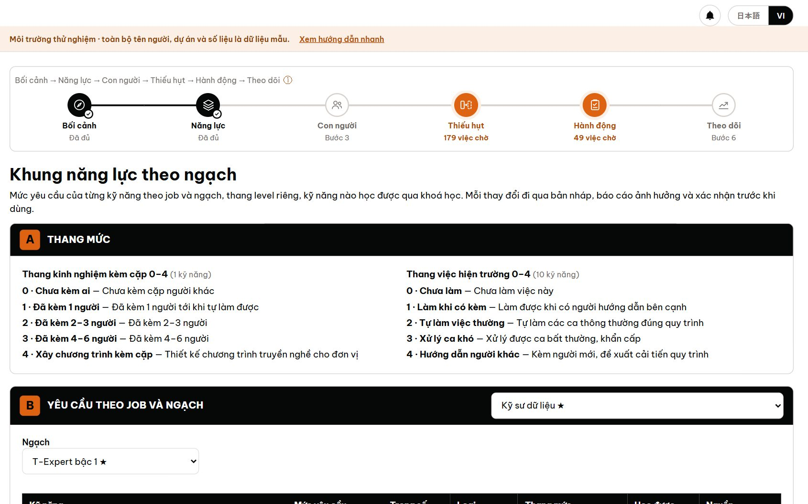
15Chỉ số PoC
Giá trị mang lại
Giúp tổ chức đo giai đoạn thí điểm theo đúng tiêu chí đã thống nhất, thay vì đánh giá bằng cảm nhận.
- Mức sử dụng: % nhân viên dùng trang nghề nghiệp, số tài khoản hoạt động, lượt xem theo trang và xu hướng 8 tuần.
- Thời gian lấp vị trí: số ngày từ lúc mở đăng cơ hội tới khi nhân sự quyết định chuyển người, và tới ngày chuyển thực tế.
- Tỷ lệ chấp nhận gợi ý AI: so với mục tiêu 80%, tách riêng gợi ý kỹ năng cho job, bằng chứng AI trích xuất và kết luận sơ bộ của AI với bằng chứng IDP.
Mô tả tính năng
Vào Chỉ số PoC (nhân sự, quản trị, ban giám đốc). Trang chỉ hiện số tổng hợp, không có dữ liệu theo từng người. Lượt xem chỉ được ghi cho các trang có trong menu.

Cải tiến trải nghiệm
1Hiển thị theo ngôn ngữ cho cả dữ liệu
Mục đích & Giá trị mang lại
Giúp đội Nhật và đội Việt cùng làm trên một dữ liệu mà mỗi bên đọc bằng ngôn ngữ của mình.
- Đổi ngôn ngữ tức thì: nhãn, nút, thông báo lỗi và tên dữ liệu (job, đơn vị, kỹ năng, phát hiện) đổi ngay khi bấm 日本語 / VI.
- Họ tên dạng Latin: ở giao diện tiếng Việt, 服部 悠斗 hiện là Hattori Yuto. Giao diện tiếng Nhật và file xuất ra vẫn dùng tên gốc.
- Không trộn hai ngôn ngữ: câu nào chưa dịch trọn được thì giữ nguyên bản gốc, không hiện câu nửa Việt nửa Nhật.
- Sơ đồ không tràn chữ: nhãn trên sơ đồ được ngắt dòng theo chữ đang hiển thị, kể cả chữ Nhật không có dấu cách.
2Menu theo phạm vi, tìm nhanh và ghim
Mục đích & Giá trị mang lại
Tìm đúng trang nhanh hơn: menu nhóm theo việc của chính người dùng (như Workday, Oracle HCM), mở dần theo hai phase để mỗi lần chỉ làm quen vài trang.
- Của tôi: lộ trình, nghề nghiệp và nguyện vọng, IDP, tuyển dụng nội bộ, theo dõi sau chuyển, yêu cầu đính chính.
- Nhóm của tôi (cấp trên): kỹ năng của nhóm, duyệt IDP và hậu kiểm, cơ hội và đơn ứng tuyển, người mới chuyển về, an toàn của đơn vị.
- Tổ chức: bốn nhóm con có thể thu gọn — Chuỗi chiến lược (1–6), Nhân lực, Phát triển và dịch chuyển, Tri thức (graph, mạng lưới, kiến trúc job, khung theo ngạch).
- Vận hành (cuối menu): hàng duyệt, chỉ số hiệu quả, nhịp vận hành, dữ liệu và thiết lập, quản trị.
- Tìm nhanh và ghim: Ctrl K tìm trang và dữ liệu; ☆ ghim mục hay dùng lên đầu menu; đường dẫn vị trí hiện ở đầu các trang trong Tổ chức và Vận hành.
- Phase chưa mở: mục vẫn ở nhóm của nó nhưng mờ, nhãn "Sắp mở"; nhân viên và cấp trên chưa mở được và không nhận việc dẫn tới các trang này. Nhân sự và quản trị mở được để chuẩn bị dữ liệu.
- Đổi phase: quản trị đổi trong cấu hình của tổ chức, không cần cập nhật phiên bản.
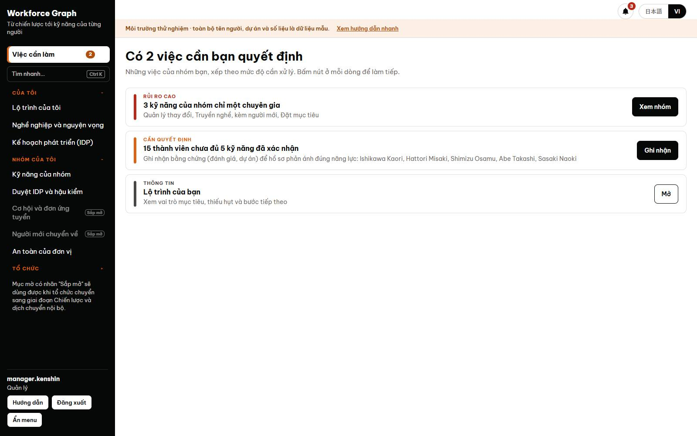
3Thông báo trong ứng dụng
Chi tiết cải tiến
- Chuông ở góc trên: số đỏ là số thông báo chưa đọc. Bấm một thông báo để đi tới đúng trang.
- Đánh dấu đã đọc: một nút cho tất cả, hoặc tự đánh dấu khi bấm vào từng thông báo.
Dữ liệu cá nhân & bảo mật
Đồng ý sử dụng dữ liệu có phiên bản
- Mỗi mục đích dùng dữ liệu có văn bản tiếng Việt và tiếng Nhật, kèm danh sách ai được xem.
- Khi tổ chức đăng phiên bản mới có thêm bên được xem, người đã đồng ý bản cũ sẽ thấy lại thông báo đồng ý ở lần đăng nhập sau. Bên mới chỉ được xem sau khi người đó đồng ý lại.
Bảo vệ dữ liệu
- Họ tên, email, ngày sinh được mã hoá (AES-256) và lưu tách khỏi đồ thị kỹ năng; đồ thị chỉ dùng mã nhân viên.
- Quyền xem theo vai trò và công ty: nhân sự công ty con chỉ thấy người của công ty mình; ban giám đốc chỉ thấy số tổng hợp.
- Nhật ký chỉ ghi thêm: mọi lần xem hồ sơ, giải mã họ tên, gọi AI và mọi quyết định đều được ghi, không sửa hay xoá được.
- Không quyết định tự động về con người: thiếu hụt, hành động, kế thừa, đơn ứng tuyển, IDP và bằng chứng đều qua người duyệt.
- Dữ liệu kỹ năng chỉ dùng cho phát triển và bố trí, không dùng để trừ điểm hay xếp hạng cắt giảm.
Quy định
Các giá trị dưới đây là thiết lập của giai đoạn thí điểm Toho Gas và đổi được theo cấu hình của tổ chức.
| Quy định | Giá trị |
|---|---|
| Cấp trên phòng đi phản hồi đơn tuyển nội bộ | 14 ngày |
| Hoãn chuyển (một lần, có lý do) | tối đa 90 ngày |
| Ngày chuyển mặc định sau quyết định | 60 ngày |
| Thời gian dành cho 社内副業 | tối đa 20% |
| Một giai đoạn IDP | 90 ngày · 4 giờ học/tuần (~51 giờ) |
| Gợi ý mức từ hồ sơ khi tự đánh giá | ≥ 50% số kỹ năng |
| Hạn hậu kiểm bằng chứng | 5 ngày làm việc |
| AI chấm sơ bộ thử lại khi lỗi | 3 lần |
| File bằng chứng | JPG, PNG, PDF · ≤ 10 MB |
| Khảo sát trong IDP | mỗi 28 ngày và cuối lộ trình |
| Khảo sát sau chuyển | ngày 30, ngày 90, tháng 12 |
| Nhắc chứng chỉ sắp hết hạn | trước 90 ngày |
| Kỹ năng được tính là "có" | độ tin cậy ≥ 0,5 |
| Kỹ năng AI gợi ý được tính là chấp nhận | được giữ khi lưu trong 7 ngày |
Ai dùng tính năng nào
| Vai trò | Dùng chính |
|---|---|
| Nhân viên | Lộ trình của tôi, Nghề nghiệp và nguyện vọng, Kế hoạch phát triển (IDP), Tuyển dụng nội bộ, Theo dõi sau chuyển |
| Cấp trên trực tiếp | Việc cần làm của đơn vị, Duyệt IDP và hậu kiểm, phản hồi đơn tuyển nội bộ, checklist 90 ngày |
| Người đăng tuyển | Đăng cơ hội, xem ứng viên không tên, chọn vào vòng trong |
| Nhân sự công ty | Như nhân sự tập đoàn, trong phạm vi công ty mình |
| Nhân sự tập đoàn | Toàn bộ chuỗi sáu bước, hàng duyệt, điều chuyển định kỳ, khung theo ngạch, Chỉ số PoC |
| Ban giám đốc | Danh mục nhân sự, An toàn và kế thừa, Chỉ số PoC (số tổng hợp) |
| Văn phòng DX | Từ điển kỹ năng DX, tab DX人材 |
Xử lý sự cố
| Hiện tượng | Nguyên nhân | Cách xử lý |
|---|---|---|
| Nút "Hoàn tất và lập IDP" bị mờ | Chưa chấm đủ mọi kỹ năng; số trên nút cho biết đã chấm bao nhiêu | Chấm mức cho các kỹ năng còn trống |
| Báo "Chỉ nhận ảnh JPG/PNG hoặc PDF" | File đúng đuôi nhưng nội dung không phải ảnh hoặc PDF | Xuất lại file đúng định dạng, hoặc nộp bằng đường link |
| Bằng chứng ghi "AI không chấm được" | AI chưa được bật, hoặc lỗi sau 3 lần thử | Không cần làm gì: bằng chứng vẫn vào hàng hậu kiểm và người duyệt kết luận |
| Mục menu mờ, nhãn "Sắp mở" | Trang thuộc phase chưa mở | Chờ tổ chức chuyển phase; nhân sự, quản trị vẫn mở được để chuẩn bị dữ liệu |
| Phòng tuyển không thấy tên ứng viên | Đơn ứng tuyển ẩn danh tới vòng trong | Chọn đơn vào vòng trong để thấy tên |
| Duyệt chuyển người bị chặn | Đơn vị an toàn sẽ xuống dưới số người tối thiểu có chứng chỉ | Chọn người khác, hoặc nhân sự ghi lý do và phương án bù để vượt |
| Không thấy IDP để duyệt | Chỉ cấp trên trực tiếp của đơn vị hoặc nhân sự được duyệt; không ai tự duyệt IDP của mình | Kiểm tra đơn vị của nhân viên, hoặc chuyển cho nhân sự |
| Không kích hoạt được bản nháp khung | Chưa ghi người xác nhận phía tổ chức, hoặc ngày xác nhận ở tương lai | Ghi chức danh/bộ phận người xác nhận và ngày đã xác nhận |
| Thông báo đồng ý hiện lại sau khi đã đồng ý | Tổ chức đăng phiên bản mới có thêm bên được xem dữ liệu | Đọc phần "Mới thêm" và bấm Tôi đồng ý |
| Ở giao diện tiếng Việt vẫn có vài dòng tiếng Nhật | Nội dung người dùng tự nhập (ghi chú, mô tả cơ hội) giữ nguyên như khi nhập | Bình thường; hệ thống chỉ dịch giao diện và danh mục có bản song ngữ |
Trong quá trình sử dụng phiên bản mới, nếu có nội dung cần giải đáp hoặc thao tác cần hướng dẫn, Anh/Chị vui lòng liên hệ cán bộ phụ trách dự án. Nút Hướng dẫn ở góc dưới thanh menu mở lại phần giới thiệu nhanh cho từng vai trò.
Cảm ơn Anh/Chị đã đồng hành cùng giai đoạn thí điểm!